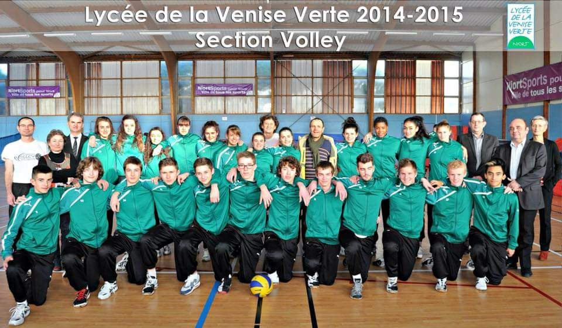
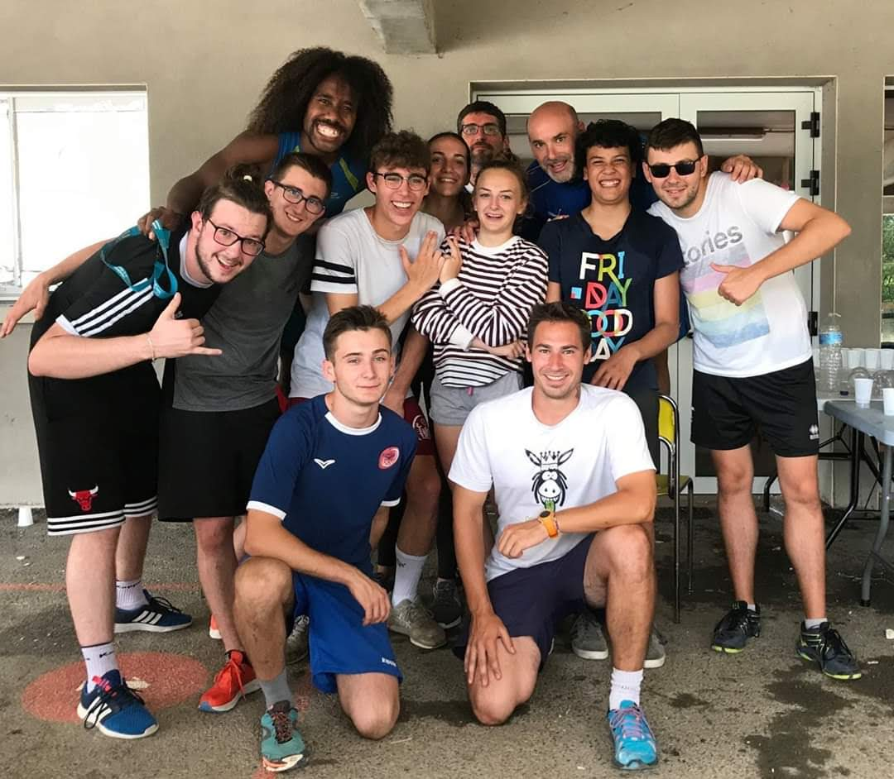

Mon Parcours
Découvrez les étapes clés de ma formation en science des données et mes expériences marquantes
Baccalauréat Scientifique
Spécialité Physique-Chimie
Lycée La Venise Verte en Sport étude volley (Seconde), Niort
Lycée Aliénor d'Aquitaine (Premiere et Terminal), Poitiers

Service Civique au Comité de la Vienne de volley
Pendant mon service civique, j'ai participé à plusieurs missions autour du sport et plus particulièrement du volley-ball
- Encadrement des entraînements pour adultes et enfants
- Organisation d'événements de volley pour adultes et enfants
- Animation dans un centre aéré spécialisé dans le sport
Cette expérience m'a permis de gagner en organisation, de prendre des responsabilités et de renforcer mes qualités relationnelles auprès d'enfants comme d'adultes.

Ouverture internationale : Australie
J'ai passé plusieurs mois en Australie, combinant un rôle d'Au pair et un voyage en autonomie. Pendant six mois, j'ai travaillé au sein d'une famille australienne où j'ai développé des compétences essentielles comme la gestion du quotidien, la communication interculturelle, la responsabilité et l'adaptabilité. Ensuite, j'ai voyagé de manière autonome pendant trois à quatre mois, ce qui m'a permis de renforcer mon sens de l'organisation, ma capacité à prendre des initiatives et à m'adapter à de nouveaux environnements.

BTS Tourisme Option International
Au cours de mon BTS Tourisme, j'ai consolidé des compétences clés en conception d'offres touristiques, gestion de la relation client et communication multilingue. L'option International m'a permis de mieux comprendre les enjeux du tourisme à l'échelle mondiale et d'acquérir une réelle capacité d'adaptation face à des publics et des partenaires variés.
- Accueil et conseil client en français et en langues étrangères
- Conception et organisation de prestations touristiques
- Adaptabilité et communication dans un contexte multiculturel

Stage à l'international
Durant mon BTS j'ai eu la chance de faire deux stages d'environ 3 mois chacun à l'international. Le premier à Lisbonne dans l'entreprise Occubo qui gèrent différents site touristiques et spectacle et le deuxieme à Copenhague dans le tour operator Vision Of Scandinavia.
Ces deux expériences ont été extrêmement enrichissantes pour mon parcours professionnel. Elles m'ont permis de découvrir la réalité du terrain, d'améliorer considérablement mon niveau d'anglais, ainsi que de développer de nombreuses compétences professionnelles.
- Prise d'initiative et autonomie
- Maîtrise de l'anglais professionnel
- Gestion d'organisation et de planning

Operation Coordinator Vision Of Scandinavia
Après l'obtention de mon diplôme, j'ai eu l'opportunité de rejoindre à nouveau Vision of Scandinavia, cette fois-ci en tant qu'employé sur le marché français. J'y ai assuré le suivi opérationnel de groupes francophones et multilingues : organisation des hôtels, des restaurants, des guides et des activités.
- Gestion de la relation fournisseurs
- Suivi administratif et comptable
- Gestion de projets touristiques

Différents emplois dans l'événementiel et dans l'animation
Après mon expérience à Copenhague, j'ai décidé de changer de voie. En attendant ma réorientation, j'ai travaillé dans l'événementiel et en tant que saisonnier, ce qui m'a permis de développer des compétences variées en gestion, animation et service client.
- Animation d'événements
- Service client et accueil
- Adaptabilité et réactivité

BUT Science des données
Après plusieurs années d'expériences variées, en France et à l'étranger, j'ai décidé de reprendre mes études pour m'orienter vers un domaine qui me passionne profondément : la science des données. Cette formation me permet de développer des compétences solides en analyse, traitement et visualisation de données, ainsi qu'en programmation (notamment en Python et SQL).

Alternance - Data Manager chez Legrand
Dans le cadre de mon BUT 2 en Science des Données, j'effectue mon alternance au sein du groupe Legrand en tant que Data Manager. Cette expérience me permet d'appliquer concrètement mes compétences et de me confronter aux exigences de la gouvernance et de la qualité des données en entreprise.
- Gouvernance et amélioration de la qualité des données (data quality)
- Structuration des bases de données et modélisation de flux d'information
- Conception d'analyses et tableaux de bord d'aide à la décision